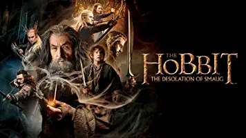
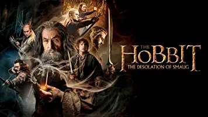

Título : Hasta el Último Hombre
Duración : 139 minutos
Género : Bélico, Biográfico
Actores : Andrew Garfield, Sam Worthington, Luke Bracey
La película está basada en la historia real del soldado del Ejército de EE. UU. Desmond Doss, un cristiano Adventista del Séptimo día, que se negó a portar armas en el frente, fue objeto de burla y persecución y que, a pesar de aquello, fue condecorado con la Medalla de Honor por el presidente Harry S. Truman, por haber salvado la vida a más de setenta y cinco hombres bajo el constante fuego enemigo en el acantilado de Maeda durante la brutal batalla de Okinawa, en la Segunda Guerra Mundial.
Similares


 
